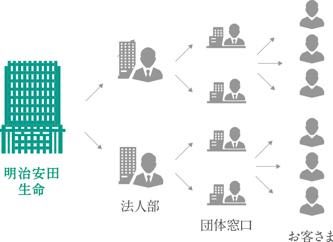

- トップ
- 明治安田生命について
- 11のフィールド
11のフィールド
明治安田生命の
働くフィールドをご紹介します。
- 個人営業
- 個人のお客さまに対して、病気・ケガ、介護、万一の場合の保障やセカンドライフの資金準備等、幅広いニーズに対応した最適な商品を提案するとともに、対面を中心としたご契約後のアフターフォローを提供するのが“個人営業”です。全国約3万人のＭＹライフプランアドバイザーがお客さまに感動いただけるサービスを提供できるよう、チャネル戦略に基づいた営業・サービス態勢の整備・拡充やＭＹライフプランアドバイザーに対する教育・支援等を行なっています。
-
関係部署
業務部、営業教育部、営業企画部、営業人事部、
東京都心本部、首都圏本部、名古屋本部、大阪本部 、福岡本部 等
(営業拠点)支社・マーケット開発部、営業部・営業所 等
- 法人営業
- 企業や官公庁等に対して、所属員の死亡や病気・ケガに対する保障である団体保険、退職金の準備等に向けた団体年金など、団体向け保険商品や各種サービスを提供するのが“法人営業”です。市場環境の変化も踏まえ、お客さまのニーズを的確に把握し、法人マーケットにおける戦略の企画・立案、商品・サービス態勢の整備等、関係部署が連携して団体の福利厚生制度の発展に向けた取組みを行なっています。
- 
-
関係部署
総合法人業務部、総合福祉業務部、法人支援部、 法人営業企画部 等
(営業拠点)総合法人部、公法人部、広域組織法人部 等
- 代理店営業
- 法人・個人代理店を通じて、企業や個人のお客さまに商品・サービスを提供するのが“代理店営業”です。代理店には、銀行のお客さまに貯蓄性商品を中心に販売する「金融機関代理店(銀行等での窓口販売)」や、主に企業に対して事業リスクマネジメントのための保険商品提案等を行なう「法人代理店」等があります。市場環境やお客さまのニーズの変化に的確に対応した商品・サービスの企画、代理店に対する支援態勢の整備等を行なっています。
-
関係部署
総合代理店業務部、営業企画部 等
- 資産運用
- 将来にわたって保険金・給付金を確実にお支払いできるよう、お客さまからお預かりした大切な保険料を、国内外の有価証券、不動産への投資や、企業への融資などによって運用するのが“資産運用”です。金融市場のめまぐるしい変化に向き合いながら、厳格なリスク管理のもと長期的な安定性と収益性をめざした運用を行なっています。
-
関係部署
運用企画部、融資部、証券運用部、特別勘定運用部、
不動産部、運用審査部、運用サービス部、融資推進部 等
- 個人事務
- 個人保険や個人年金保険等の長期にわたるご契約の引受・維持・管理を担うのが“個人事務”です。超高齢社会の進展と当社ご契約者の今後の高齢化等を踏まえ、より多くのお客さまに保障を提供するためのご契約の引受態勢の強化や、お客さまの負荷軽減につながる事務サービス態勢の整備・構築、保険金・給付金をより適切に、より確実に、より速くお支払いするための支払査定事務の高度化など、お客さまにいつまでも変わらない確かな安心をお届けするための取組みを行なっています。

-
関係部署
事務サービス企画部、契約部、契約サービス部、
保険金部 等
- 法人事務
- 企業や官公庁等における団体保険や団体年金等のお引受けやお支払い、ご契約の維持・管理を担うのが“法人事務”です。団体の福利厚生制度の運営等を事務面からサポートするため、事務サービス態勢の整備・構築や、ご契約団体の事務効率化に向けた取組みをサポートしています。
-
関係部署
法人サービス部、団体年金サービス部 等
- 商品
- お客さまの多様なニーズを踏まえた保険商品開発等を担うのが“商品”です。生命保険市場の動向やお客さまニーズの変化等の調査・分析、商品開発計画の立案および具体的な商品設計に加え、保険金の支払態勢の整備、システム開発等に関する関連部門との連携・調整、商品発売後の多角的な分析・フォローアップなど、保険商品に関する一連の業務を担っています。
-
関係部署
商品部、法人営業企画部 等
- 経営資源
- 保険会社の経営において必要不可欠となる「人財」「お金」「情報」等に関する業務を担うのが“経営資源”です。当社で働く人財価値の向上を担う部署、事業費予算の策定・管理等を担う部署、当社の多岐にわたる業務をシステム面からサポートする部署、経営全般にかかわる企画・立案や態勢整備等を担う部署などが、当社におけるガバナンスの強化に向けた取組みを行なっています。
-
関係部署
人事部、収益管理部、情報システム部、企画部、調査部 等
- 内部管理
- 各組織における適切な業務の遂行や、業務運営上の課題等の把握と改善に向けた取組みの助言・指導等を行なうのが“内部管理”です。コンプライアンス態勢やリスク管理態勢を整備・推進する部署、中立的・客観的な立場から法的なリスクを提示・助言する部署など、会社全体の多岐にわたる業務をサポートし、当社のさらなる発展を支えています。
-
関係部署
「お客さまの声」統括部、コンプライアンス統括部、
リスク管理統括部、法務部、内部監査部 等
- 一般管理
- 当社のさまざまな組織や関連会社を間接的にサポートするのが“一般管理”です。企業イメージの向上や地域社会への貢献に向けた取組みを担う部署、社内の物流や環境整備など総務事項全般を所管する部署、国内関連会社の経営全般をサポートする部署など、それぞれの部署がその役割や責任を果たし、当社の広範な事業活動を支えています。
-
関係部署
広報部、総務部、秘書部、関連事業部 等
- 海外保険事業
- 当社グループ全体での成長軌道を確保すべく、グローバルな成長機会の追求に向けた取組みを担うのが“海外保険事業”です。既存投資先5ヵ国6社の中長期的な収益拡大、調査態勢の強化と新規開拓の推進に加え、これら海外保険事業展開を支える経営管理態勢の整備やグローバル人財の計画的な育成等を行なっています。
-
関係部署
国際事業部 等